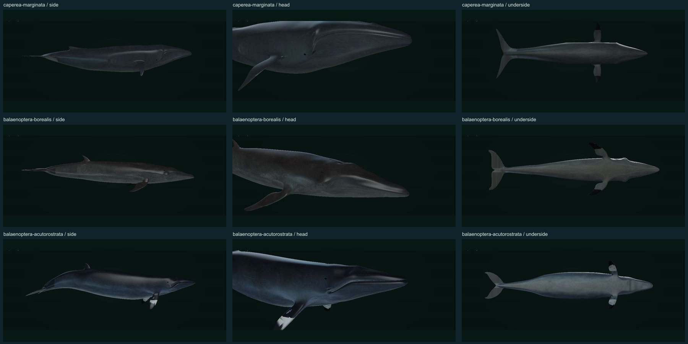
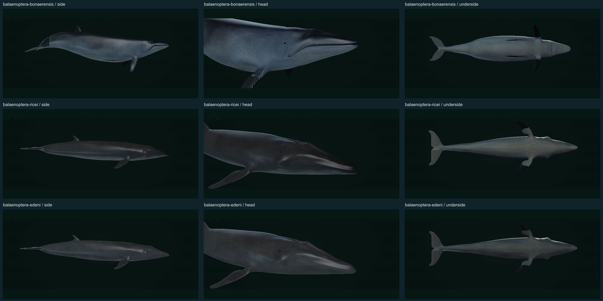
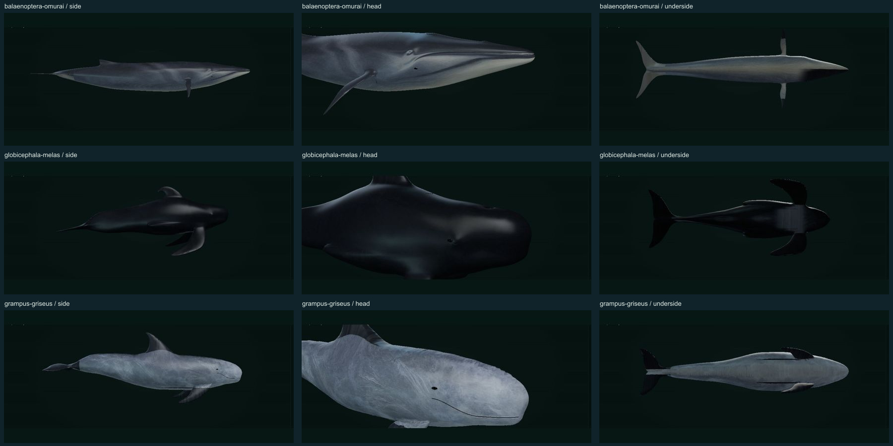
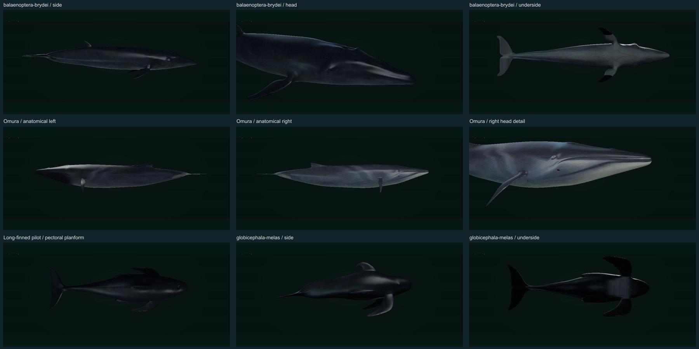
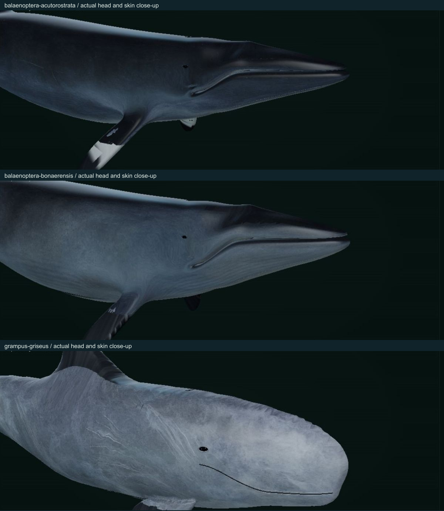
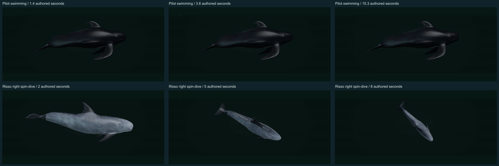

← Open the archivePHENOVOXEL ARCHIVE / SKIN & FACIAL ANATOMY / 5 NOVEMBER 2026
Distinct whale skins, corrected eyes and mouths.
Both minke whales and Risso’s dolphin have revised facial surfaces and skin. The rest of the previous nine-species batch also receives independent skin artwork, replacing shared source markings. Ten display profiles retain their credited source geometry.
Photographs guide species appearance; their pixels were not copied into the models. Fine skin is generated and authored artwork. The native artwork is 2172×724 pixels, projected into 4K color maps with separate 2K normal and roughness maps. Larger output does not add observed photographic detail. Exact scars represent illustrative individuals.
Species-by-species review
| Species | Skin and head corrections | Source surface |
|---|
| Pygmy right whaleCaperea marginata | Smooth gray-to-pale ventral skin with no callosity pads or rorqual throat-pleat field. Recessed lateral eyes and skin-covered arched lip margins. Species photographs / head reference · Biological account | Johann Woelper
CC BY-NC 4.0 |
| Sei whaleBalaenoptera borealis | Independent dark steel-gray skin with sparse pale healed oval scars, pale ventral epidermis, a single rostral ridge and a shorter ventral groove field. Species photographs / head reference · Biological account | Bohdan Lvov (ostapblendercg)
CC BY 4.0 |
| Common minke whaleBalaenoptera acutorostrata | Selected Northern Hemisphere common minke: dark upper body, subdued gray shoulder wash, pale underside and a midpectoral white band. Skin detail covers both jaws and belly; recessed lateral eyes and narrow closed lip crease. Species photographs / head reference · Biological account | Bill Nguyen (bill_nguyen)
CC BY 4.0 |
| Antarctic minke whaleBalaenoptera bonaerensis | Selected Antarctic minke: independently authored gray flank lobes and pale ventral skin, dark pectorals without a northern-type transverse band, and a shorter selected throat-groove field. Species photographs / head reference · Biological account | Bill Nguyen (bill_nguyen)
CC BY 4.0 |
| Rice's whaleBalaenoptera ricei | Independent, relatively smooth dark-gray skin and pale underside; three rostral ridges and symmetric lower-jaw pigment. Shared source scars from the Sei mesh have been removed. Species photographs / head reference · Biological account | Bohdan Lvov (ostapblendercg)
CC BY 4.0 |
| Bryde’s / Eden’s whaleBalaenoptera edeni | Separate coastal Eden/offshore Bryde display profiles retain three rostral ridges and symmetric jaw pigment. Each has a different authored skin map and individual scratch pattern. Color shade and scars do not diagnose the unresolved taxonomic forms. Species photographs / head reference · Biological account | Bohdan Lvov (ostapblendercg)
CC BY 4.0 |
| Omura's whaleBalaenoptera omurai | Independent skin with pale right/dark left lower jaw, a right-side blaze, asymmetric chevrons and pale pectoral leading edges. Both lower jaws retain detailed skin; inner-gape anatomy is not claimed for this closed-mouth exterior. Species photographs / head reference · Biological account | Johann Woelper
CC BY-NC 4.0 |
| Long-finned pilot whaleGlobicephala melas | Smooth charcoal-black skin, subdued saddle and ventral anchor marking replace painted glare. Swept pectorals extend toward a selected root-to-tip length near 23% of body length, within the published 18–27% range. Species photographs / head reference · Biological account | allthingsaurus
CC BY 4.0 |
| Risso's dolphinGrampus griseus | Selected mature Risso: a rounded beakless muzzle, median melon crease, recessed lateral eyes and short closed oral commissures. Fine gray epidermis and irregular pale rake-scar groups continue across the head and lower jaw; fins remain darker. Exact scars and pigment describe an illustrative individual. Species photographs / head reference · Biological account | ivan.geraldo
CC BY 4.0 |
Actual viewer images
These show the delivered models, not reference photographs. Review each image at full size. Each row includes side, head and underside views unless labeled otherwise. Anatomical sides use separate texture areas; fins and flukes have dedicated charts to prevent skin leakage.

Pygmy right whale; Sei whale; common minke. Selected views from the delivered viewer; source creator credits are in the table.

Antarctic minke; Rice’s whale; coastal Eden profile. Selected views from the delivered viewer; source creator credits are in the table.

Omura’s whale; long-finned pilot; Risso’s dolphin. Selected views from the delivered viewer; source creator credits are in the table.

Offshore Bryde profile; Omura side comparison; pilot flipper planform. Selected views from the delivered viewer; source creator credits are in the table.Eyes, lips and lower-jaw skin

Actual facial close-ups. The source jaw surfaces remain skin-covered. New dark eye apertures sit within skin lids. Native source jaws remain skin-covered; Risso has separately authored closed oral commissures.Movement and fin proportions
Long-finned pilots generally have longer pectoral flippers than short-finned pilots. The selected reconstruction is near 23% of total length, within the published 18–27% range. This is a selected proportion, not a universal measurement. Diagnostic guide; short-finned comparison.

Selected pilot swimming stages and Risso right-sided spin-dive. Same connected skin and facial surfaces remain attached. Timings are authored, not measured trajectories.Evidence and limits
Skin pigment, fine relief and surface reflection are separate optical channels. Pale lower jaws and bellies have skin detail; they are not blank white panels. Images and software checks cannot certify photorealism or scientific accuracy. These are artist reconstructions, not scans, measured skin optics or fitted individuals. External movement is illustrative; feeding mechanics and full physiological simulation remain unavailable. The remaining 332 species, original occurrence decisions, reference photos and deposited molecular sequences are preserved.
Original source licenses continue to apply to body derivatives and their renderings. Caperea and Omura retain Johann Woelper’s noncommercial grant; the other listed source bodies retain CC BY 4.0. New skin artwork and implementation provenance are recorded in the linked license file.